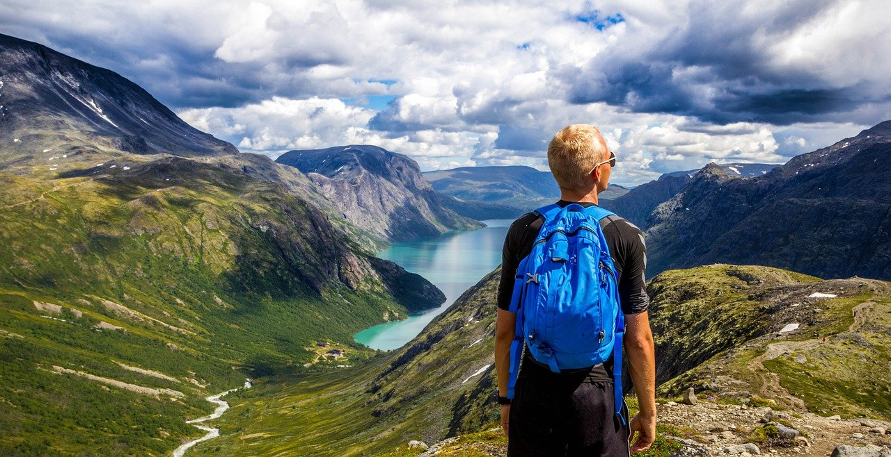

Some tips and tricks to backpack through Switzerland safely and experience some adventure!
By Kyla Ferry

man backpacking
Best Backpack Friendly Cities
These list of towns and cities are, in my professional opinion, the best places to vist if you are backpacking on a budget. I have created this list from personal experince and trial and error. While everyone travels differently, this will be a effecient plan to follow if you are looking for beauty, adventure, and culture.
Geneva
City, $$$
Zermatt
Mountain region, $$$
Jungfrau Region
In the swiss alps, $$$$
Lucerne
City, $$
Zurich
City, $$
Best Activities Throughout Switzerland
Switzerland has a wide range of activities and can entertain almost everyone!